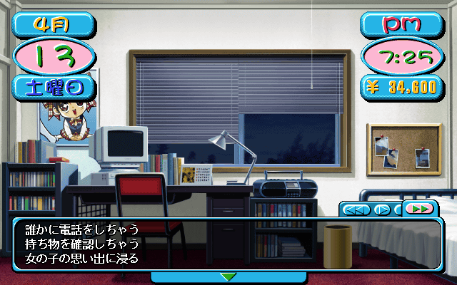
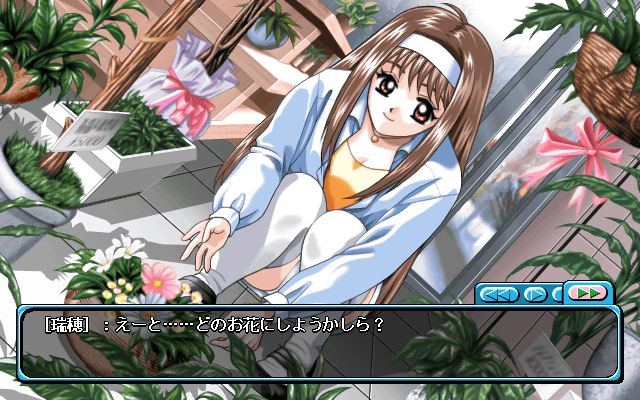
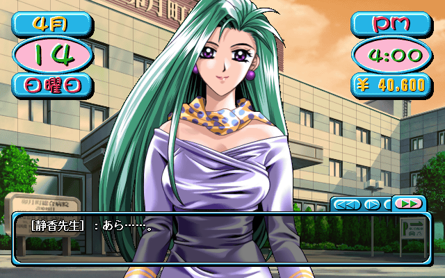
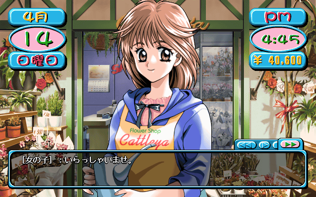
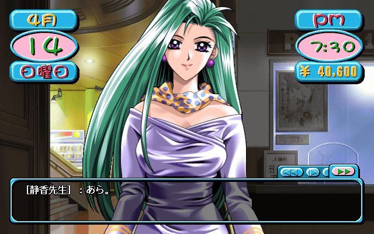
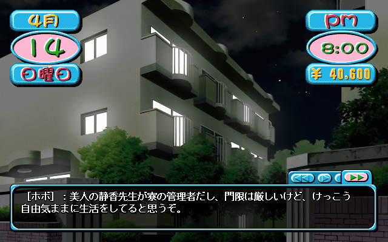

Getting denied
Home alone with nothing to do on a Saturday night? Time to make some phone calls.

First up, Mizuho.
| hobo: | "I wonder how long it's been since I've called Mizuho." |
| *ring ring* | |
| Mizuho: | "Hello, Yuuki household speaking" |
| hobo: | "Hey." |
| Mizuho: | "Is this hobo?" |
| hobo: | "Hahaha, you've known me for over 2 years now, I guess it makes sense you can recognize me just by my voice." |
| Mizuho: | "Yeah, I know Minoru's voice too." |
| hobo: | "Ah." |
| CHOICE: | Ask when her birthday is. |
| hobo: | "Hey, so, your birthday is.." |
| Mizuho: | "Yeah, June 12th." |
| hobo: | "Y-yeah.. June 12th isn't it." |
| Mizuho: | "......" |
| hobo: | "......" |
| Mizuho: | "Did you forget?" |
| hobo: | "N-never! How could I ever forget your birthday!" |
| CHOICE: | Plan a date. |
| hobo: | "Mizuho.. Tomorrow, let's go on a date." |
| Mizuho: | "I don't know, are you sure you won't just forget?" |
| hobo: | "W-when has that ever happened?" |
| Mizuho: | "Let's talk about all the promises you've broken. I've known you for 2 years now, so I think it'd take about 3 hours." |
| hobo: | "T-the me of today and the me of the past are different." |
| Mizuho: | "Ummm.. What should I do." |
| hobo: | (Hmm, I wonder what she's thinking about.) |
| Mizuho: | "Sorry, I already have plans for tomorrow.. Maybe some other time." |
| hobo: | (Tch.. Of course she has plans.) |
| CHOICE: | Chat. |
| Mizuho: | "hobo.. We're all seniors now." |
| hobo: | "Yeah, we've done lot's of things together." |
| Mizuho: | "Truly, all sorts of things." |
| hobo: | "Do you remember when we all went to the beach last year?" |
| Mizuho: | "Huh?" |
| hobo: | "Hahaha, for some reason Reiko and Haruhiko came with us, and afterwards we all got to ride in Reiko's limousine." |
| Mizuho: | "I remember. You and Minoru spent the whole time hollering at girls." |
| hobo: | "I-it'd be better if you didn't remember that part." |
| Mizuho: | "I was shocked, we all came together, and you two just spent all the time trying to pick up other girls." |
| hobo: | "A-about that.." |
| CHOICE: |
◯ Say "They were just passing by. We were greeting them out of courtesy." ● Say "It's your fault, you didn't want to spend any time with us." ◯ Say "I didn't really want to do it, Minoru pushed me to join him." |
| hobo: | "It's your fault, you didn't want to spend any time with us." |
| Mizuho: | "Stop right there, we were talking normally the whole train ride there. Of course we were planning on spending the whole time together." |
| hobo: | "O-oh.. I guess that's right." |
| Mizuho: | "Come on, you shouldn't blame others for your mistakes." |
| hobo: | "Hahaha.. S-sorry." |
| Mizuho: | "Let's continue this conversation at school." |
| *hangs up* | |
| hobo: | "I'm not really happy with how that conversation turned out. I hope we can still continue to be friends." |
Well that didn't turn out well. On to the next call..
| hobo: | "Let's call Minoru" |
| *ring ring* | |
| Minoru's Mother: | "This is the Gotou household speaking." |
| hobo: | "This is hobo." |
| Minoru's Mother: | "Ah hobo.. Minoru is out right now." |
| hobo: | (Tch, I wonder where he's gone.) |
| Minoru's Mother: | "All he told me was that he had urgent business to get to." |
| hobo: | "Hahaha.. I guess I'll call back later." |
| *hangs up* |
As evidence that I'm really bored right now, I'm calling Shinji.
| hobo: | "I wonder why I'm calling this guy.. He's pretty pitiful so I guess I'll volunteer to keep him company for now." |
| *ring ring* | |
| Shinji's Mother: | "This is the Takada household speaking." |
| hobo: | "Is Shinji there?" |
| Shinji's Mother: | "Who are you?" |
| hobo: | "hobo, from Uzuki High." |
| Shinji's Mother: | "hobo.. I'm sorry but Shinji's at cram school right now." |
| hobo: | (Hahaha.. Shinji really spends a lot of time there.) |
| Shinji's Mother: | "Did you have something you wanted to say to my son?" |
| hobo: | "Yes, I've been having a lot of trouble sleeping recently and I was wondering if he knew of any medications that would help." |
| Shinji's Mother: | "Well I'm not Shinji's replacement so I can't help you.. Don't call again." |
| *hangs up* | |
| hobo: | "Hahaha.. She hung up on me." |
I'm desperate for someone to talk to, I'm calling Haruhiko.
| hobo: | "Why am I calling Haruhiko's house.. I'd never imagine this would happen." |
| *ring ring* | |
| Satake Family Maid: | "Greetings, who is it?" |
| hobo: | "hobo." |
| Satake Family Maid: | "Excuse me, which hobo are you?" |
| hobo: | "hobo from Uzuki High." |
| Satake Family Maid: | "Uzuki High.. Are you Haruhiko's friend?" |
| hobo: | "Hm, I wouldn't really say we're friends.. But I guess that's close enough." |
| Satake Family Maid: | "Let me check his school friends list." |
| hobo: | "What?" |
| Satake Family Maid: | "Please wait this will only take a second." |
| hobo: | (What the hell, a school friends list?) |
| Satake Family Maid: | "Umm.. hobo.. hobo.." |
| hobo: | "......" |
| Satake Family Maid: | "hobo's in.. D class!?" |
| hobo: | "???" |
| Satake Family Maid: | "So you're hobo right?." |
| hobo: | (Huh, her attitude's changed all of a sudden.) |
| Satake Family Maid: | "Why did you call Haruhiko?" |
| hobo: | "Hey maid, why did you react that way when you saw my name?" |
| Satake Family Maid: | "You're D class, that's all." |
| hobo: | "What is D class anyway?" |
| Satake Family Maid: | "D class is how the Satake family ranks the worst of the worst, dregs of society." |
| hobo: | "Dregs of society!?" |
| Satake Family Maid: | "Haruhiko!! Some scum is calling for you!" |
| Haruhiko: | "Hello, this is Haruhiko." |
| hobo: | "I'm hobo." |
| Haruhiko: | "Hmm, It sure is funny that you called me." |
| hobo: | "......" |
| Haruhiko: | "You must have something truly special to tell me." |
| hobo: | "Hey Haruhiko.. Why do you have such a twisted personality?" |
| Haruhiko: | "I don't want to hear that from you. The idea of being evauluated by worthless existences such as yourself is laughable." |
| Haruhiko: | "If you have the free time to say these things, you should think about what you're doing with your life first." |
| hobo: | (Look, he's sure in an argumentative mood right now.) |
| Haruhiko: | "Is that what you like to do with your free time, pull worthless pranks on me? I have much more important things to do than talk to you so I'm leaving." |
| *hangs up* | |
| hobo: | "......" |
| hobo: | "When that guy talks, he's sure up-front about what he thinks of others." |
Well now that I've called everyone whose numbers I know, There's not really anything left to do. I'll check Shizuka's room just in case she answers. Nope no response. It's only 9:00 but i guess it's time to go to bed.
| hobo: | "It's a little early to be sleeping, but I guess I'm a little tired." |
Let's see if Mayumi is home this time.
| *ding dong* | |
| hobo: | "......" |
| *ding dong* | |
| hobo: | "......" |
| hobo: | "Strange, nobody's answering." |
| hobo: | "......" |
| hobo: | "Whatever, I'll check out some other place." |
I'm gonna check out the flower shop.

| hobo: | "Ah.. Mizuko's here" |
| Mizuho: | "Hmmm.. What flower should I pick?" |
| hobo: | (Looking at her from close up or far away.. Mizuho sure is cute.) |
| Mizuho: | "Every time I go to the flower shop I have trouble deciding." |
| hobo: | (There are a lot of guys passing by the flower shop.. And every single one of them is turning to look at Mizuho) |
| Mizuho: | "The baby's breath decorating the doorway looks nice, but I don't know." |
| hobo: | (Hey, they keep staring.. Huh?) |
| Mizuho: | "It's hopeless.. As it is I could be looking here forever." |
| hobo: | (I thought there was something strange about the way they were looking.. They're all staring at her underwear.) |
| Mizuho: | "Ummm.. What should I do?" |
| hobo: | (R-right now I should do something.. All these guys are ogling Mizuho) |
| Mizuho: | "I'm going home, maybe my mom can help me choose." |
| hobo: | "She left without noticing me." |
While I was looking around for things to do I found this building. elf is the company that made this game. They're offering a part time job to proofread their games. 2000￥/hr is nice, especially compared to the 400￥/hr I was making at Dogeza. After working for 2 hours I'm 4000￥ richer, but no closer to any girls. After frantically going to every location I come across, I find Sensei in front of the hospital.

| Shizuka: | "Ah." |
| hobo: | "Oh, Shizuka Sensei" |
| Shizuka: | "Sorry, I have business to take care of." |
| hobo: | "Like the wind, she vanishes." |
| Shinji: | "......" |
| hobo: | (Ugh..) |
| Shinji: | "Ah.. hobo." |
| hobo: | "Hey, how long have you been here?" |
| Shinji: | "Um.. I just noticed I was here." |
| hobo: | (Huh, is he a sleepwalker?) |
| Shinji: | "......" |
| hobo: | "......" |
| Shinji: | "......" |
| hobo: | "Shinji.. You look like you're in a daze." |
| Shinji: | "Yeah.. Shizuka Sensei was just so pretty." |
| hobo: | "Hmm, so you do notice things like that after all." |
| Shinji: | "O-of course.. We're both men after all." |
| hobo: | "Hahaha.. I guess that's right." |
| Shinji: | "Do you think Shizuka Sensei's pretty too?" |
| hobo: | "Yeah, pretty, and sexy.. and she has real big tits." |
| Shinji: | "Y-you shouldn't say those kind of things." |
| hobo: | "To who?" |
| Shinji: | "To Shizuka Sensei." |
| hobo: | "Heh, there are times where she likes the way I talk." |
| Shinji: | "W-well.. I have cram school now." |
| hobo: | "Tch, when I talked about her tits his face went bright red.. He's just like a girl." |
Back to the flower shop.

| Girl: | "Welcome." |
| hobo: | (Yep, she sure is cute.) |
| CHOICE: | Chat. |
| hobo: | "Is working here fun?" |
| Girl: | "Yes, very fun." |
| hobo: | "Makes sense, spending all day surrounded by pretty flowers." |
| Girl: | "You're a man, yet you like flowers so much. Isn't that kind of strange?" |
| CHOICE: |
◯ Say "More than fields of blooming flowers, I love getting flower petals wet." ◯ Say "That's just biased, men can like flowers too." ● Say "Looking at them simply puts my heart at ease." |
| hobo: | "I think they're pretty so I guess you could say I like them. I don't know, looking at them just puts my heart at ease." |
| Girl: | "......" |
| hobo: | "Huh.. Did I say something weird?" |
| Girl: | "You're a man, and yet you think about things that way.." |
| hobo: | "Hahaha.. ha." |
| Girl: | "I have to go now, my boss is going to get mad at me." |
| hobo: | "Damn, I didn't get any closer to her, did I?" |
Checking out Reiko's house now.
| hobo: | "This giant mansion is Shindou Reiko's house. Her father owns a lot of land in Uzuki City. It feels like he owns something everywhere you go here." |
| hobo: | "Since I was a freshman I've been in the same class as Reiko.. Even though we've spent so much time together we've never gotten close." |
| hobo: | "It's not just me though, nobody at Uzuki High has. From the very beginning she's had the most stuck-up attitude of anyone at the school." |
| hobo: | "By the way.. I guess I came here to meet her." |
| hobo: | "I don't really want to do this, but it'll be alright." |
| *ding dong* | |
| Shindou Family Butler: | "Greetings, who is it?" |
| hobo: | "Umm, hobo." |
| Shindou Family Butler: | "hobo.. Which hobo are you." |
| hobo: | "Reiko's friend." |
| Shindou Family Butler: | "Ahh, Reiko's friend.. Please excuse me." |
| hobo: | "Is Reiko here?" |
| Shindou Family Butler: | "Reiko left." |
| hobo: | (Damn.. She isn't here.) |
| Shindou Family Butler: | "I'm dreadfully sorry, please try again later." |
After checking out a few places and finding nothing, I spot Shizuka again at the movie theater.

| Shizuka: | "Ah." |
| hobo: | "Shizuka Sensei, you're as pretty out on the streets as you are in school." |
| Shizuka: | "Oh is it time to praise me?" |
| CHOICE: | Ask about her boyfriend. |
| hobo: | "Hey, what is your boyfriend like?" |
| Shizuka: | "I'm sure if I told you, every student at school would know within an hour." |
| hobo: | "Tch.. You don't have any faith in me." |
| CHOICE: | Chat. |
| hobo: | "Shizuka Sensei, to tell you the truth.." |
| Shizuka: | "What are you worried about?" |
| CHOICE: |
◯ Talk about my path after graduation. ◯ Talk about my love. ● Talk about my lower half. |
| hobo: | "Um.. Recently, I haven't been getting morning wood." |
| Shizuka: | "......" |
| hobo: | "......" |
| Shizuka: | "hobo, why did you want to talk to me about that." |
| hobo: | "Ah.. Are you mad?" |
| Shizuka: | "Are you doing this to make fun of me? You should talk about this with your male friends." |
| hobo: | (But I was being serious.) |
I walk out and walk back in and Sensei's right there.
| Shizuka: | "Come on, there are plenty of places in this city you could be wandering around." |
| hobo: | "Hahaha.. ha." |
| CHOICE: | Chat. |
| hobo: | "Sensei.. I'm really troubled by something." |
| She spent time listening to my troubles. Maybe she felt like it was her duty as a teacher, but I felt a tiny sensation that there was something special about what she was doing for me. | |
| Shizuka: | "In the end it's up to you to do things. All I can do is give you advice, don't forget that." |
I really like the flashing billboards at night.

| hobo: | "This is the building I've been living in for 3 years now." |
| hobo: | "In middle school my parents divorced. I was living with my father and his new family but I never felt like I could get close to any of them. When I got into Uzuki High I decided I was going to live alone." |
| hobo: | "The beautiful Shizuka Sensei is the landlord, and although the curfew is strict, I can do almost anything I want here." |
| hobo: | "If it weren't for my fathers relative, the Dogeza Master, this would be the best place to live." |
I'll leave it at that for now.